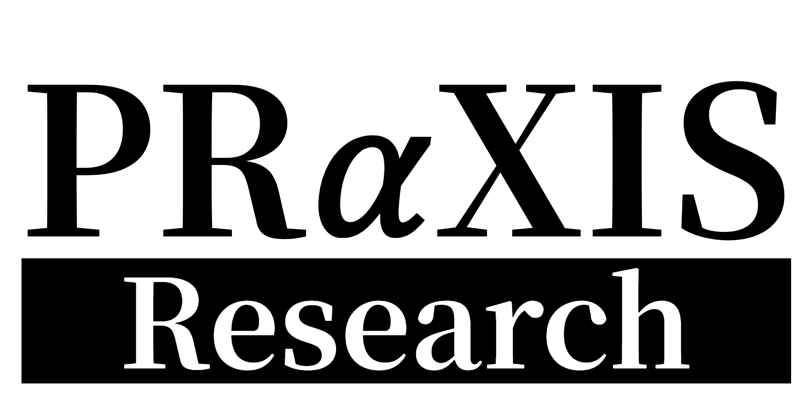

암호 생성·검증
신경망 기반으로 해시 함수와 대칭키 암호 후보를 생성하고 안전성을 자동 검증합니다. 비대칭키 암호 생성은 연구 진행 단계입니다.
- 해시 함수
- 대칭키 암호
- 자동 검증

문의하기
PRαXIS Research는 빠르게 변화하는 AI 환경에서 필요한 보안 기술을 연구하고 제품화합니다.
암호 생성·검증, 프롬프트 내 민감정보 보호, 분산 데이터 보호를 시작점으로 더 넓은 AI 보안 영역으로 확장합니다.
암호, 프롬프트, 분산 데이터를 시작점으로 AI 보안 문제를 확장해갑니다.
해시 함수, 대칭키 암호, 프롬프트 보호, 분산 데이터 보호 연구를 완료했습니다.
공공·금융 보안 환경에 맞춘 적용 방식과 실증 범위를 논의하고 있습니다.
Technology
신경망 기반으로 해시 함수와 대칭키 암호 후보를 생성하고 안전성을 자동 검증합니다. 비대칭키 암호 생성은 연구 진행 단계입니다.
외부 AI 모델로 전달되는 프롬프트에서 개인정보와 기밀 정보를 줄이면서 업무 수행에 필요한 맥락은 유지합니다.
원본 데이터를 모두 중앙으로 보내지 않고, 태스크에 필요한 정보만 남겨 안전하게 전송하는 구조를 설계합니다.
Events
공공·금융 보안 환경에 맞춘 적용 방식과 실증 범위를 논의하고 있습니다.
암호 생성·검증 기술을 주제로 한 KISA 연구 과제를 수행했습니다.
창업중심대학 지원 사업에 선정되어 7,000만 원 규모의 사업화 지원을 확보했습니다.
실험실 기반 기술 창업을 위한 지원 사업에 선정되어 7,000만 원 규모의 사업화 지원을 확보했습니다.
Next